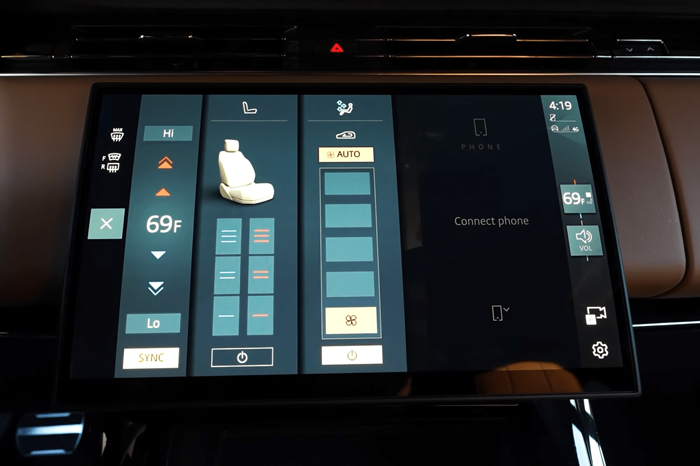
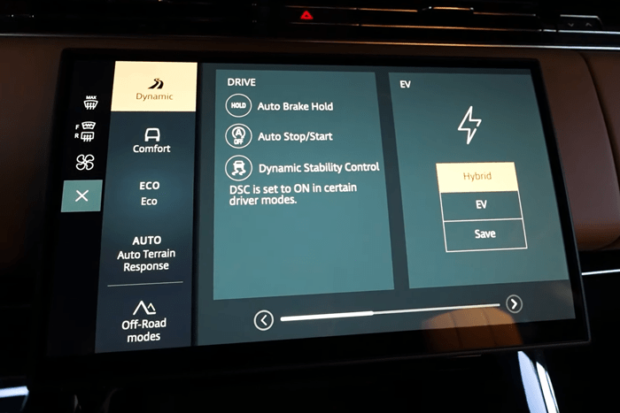
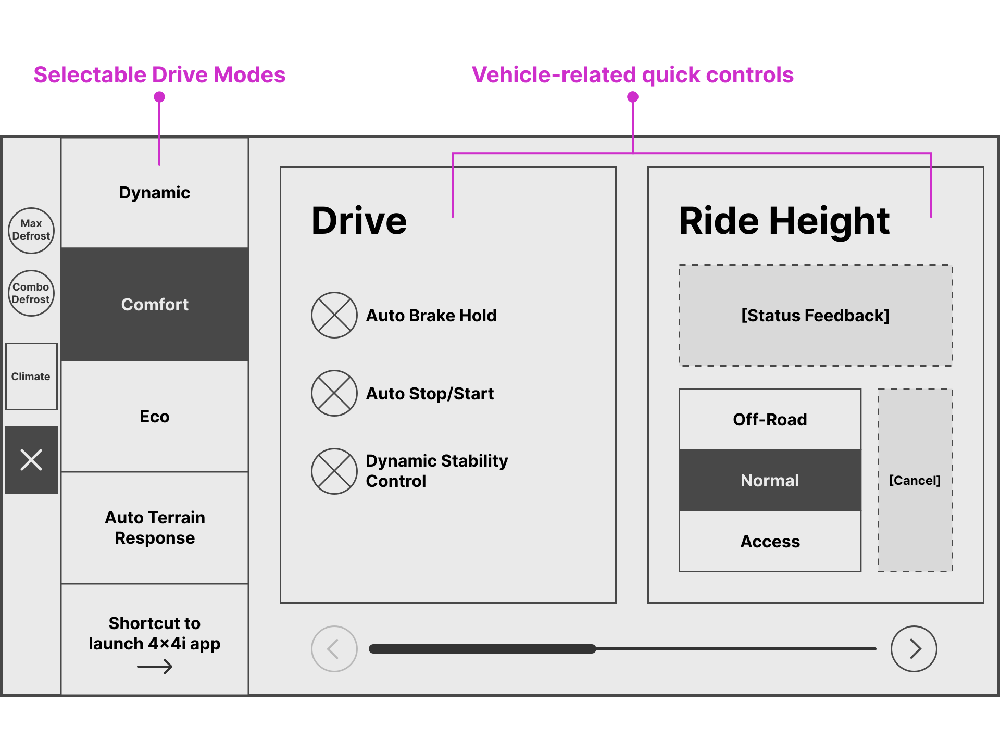
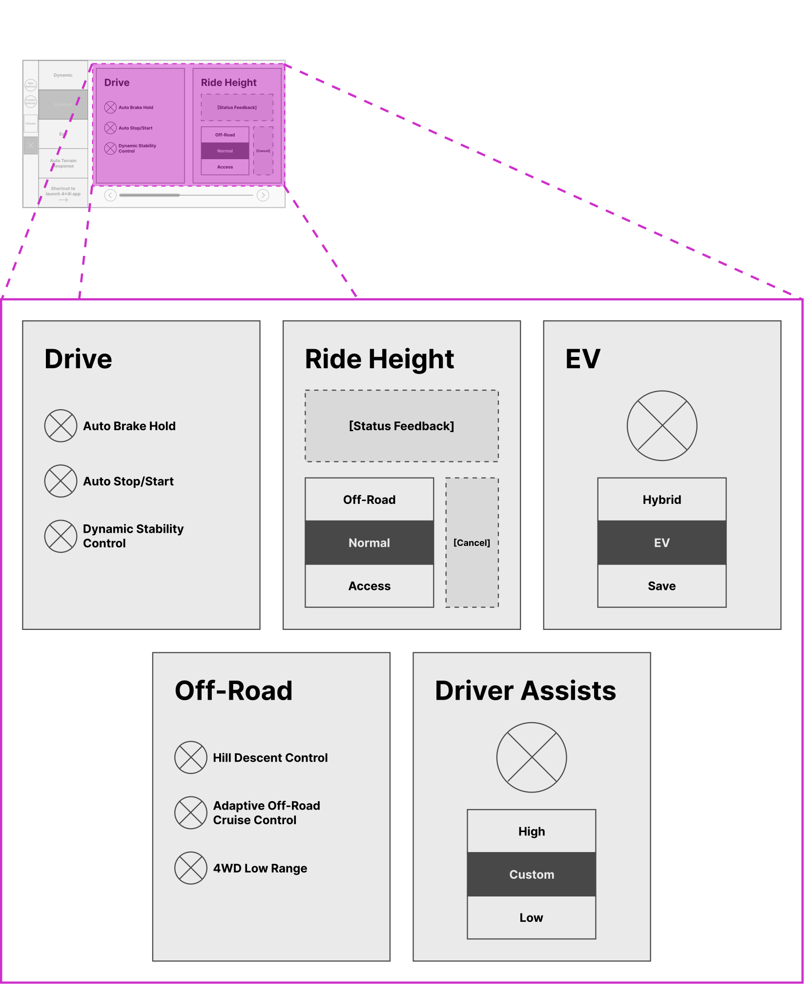

Summary
For the 24MY (2024 Model Year) mid-cycle refresh, Jaguar Land Rover removed a significant number of physical controls as part of a redesigned interior strategy. This resulted in several mission-critical vehicle functions needing to be safely and intuitively relocated into the touchscreen.
As one of the UX designers, I worked with a small design team to re-architect the existing Pivi infotainment system, adhering to strict legal, functional, and development constraints. Through multiple design iterations, interactive prototypes, and user tests, we delivered a production-ready solution that launched on the Range Rover Velar and later scaled across all JLR vehicles for 24MY and beyond.
Objective
The objective was to provide quick access to the high-frequency, safety-critical controls (previously operated by physical buttons) into the Pivi touchscreen. Affected features included:
- Climate/HVAC
- Heated/cooled seats
- Volume
- Drive modes
- Defrost
- Miscellaneous settings (e.g. Auto Start/Stop)
Constraints
The primary design challenge was working within a tightly constrained solution space. Design modifications were limited to system sidebars and overlays, driven by functional requirements, legal regulations, and existing software architecture. These constraints defined the boundaries of the work and eliminated some UX patterns that we could explore.
- Functional: Mission-critical systems such as climate and drive modes needed to be globally accessible in the system (i.e. can be accessed at anytime, regardless of which screen the user is on). In certain system states (e.g. while Apple CarPlay or Android Auto is active), the sidebars would be the only global entry point for these features.
- Legal: Functions such as Rear Defrost came with their own set of rules which needed to be considered and also dictated their implementation.
- Development: Integrating brand new, system level interactions into an existing software architecture meant that time and cost to develop factored into how much the system could/should be modified.
Approach
The What
A straightforward goal: Provide quick access to these high priority use cases, formerly physical controls, through the vehicle's touchscreen.
The Who
The work was shared between two designers, Mutlu Isik and myself, with each of us developing concepts in parallel before converging on a unified interaction model and design direction. We tackled feature sets one at a time in order to solve nuanced problems individually—such as temperature control behavior and climate layout— then integrated cohesively at a system level.
The How
- Design: One to two concepts created in parallel (in Sketch/Figma)
- Develop: High-fidelity, interactive prototypes of the design direction(s) created (in Proto.io)
- User Test Plan: Coordinate with the UX Research team
- Determine interactions/user flows to examine
- Define the user test tasks and user test plan
- Conduct remote, A/B tests (if applicable) of the prototype(s)
- User Test Debrief: Review with our the UX Research team, sharing insights, recommendations, and next steps
- Iterate: Take the research recommendations and insights and return to Step 1 with a refined design direction
Role
I was responsible for end-to-end concept development, which included: wireframing, interaction design, high-fidelity prototyping, and research collaboration. I helped develop each of interactive prototypes used in all user tests and worked directly with UX Research teams in both Portland and the UK to define user test plans and refine designs post-testing.
With the JLR headquarters located in England, and our satellite office in Portland, Oregon, this was a global effort that involved regular collaboration with management and stakeholders in the UK.
Climate Overlay
The Climate Overlay was structured into three sections—temperature, seats, and fan speed—each optimized for its specific use case. While uniform control patterns were initially explored, testing showed that excessive visual repetition affected comprehension. Assigning distinct interaction styles to each section helped improved clarity.

[Screenshot from "2025 Range Rover Controls Explained — Dashboard, Steering Wheel & Screen Guide" by MikesCarInfo (2025), YouTube, 8:46]
For temperature, a variety of controls were provided to cover a range of use cases: small, medium, and large adjustments.
- Single Chevrons: adjusts the temperature up/down by one degree (0.5 degrees Celsius).
- Double Chevrons: adjusts in larger chunks, changing the temperature up/down in four-degree increments (two degrees Celsius).
- Hi/Lo: dedicated shortcuts to jump to the highest and lowest temperatures round out the suite of controls
Supplemental interactions were also included: press-and-hold any of the chevrons for continuous adjustment, and dragging up/down on the entire temperature area.
 [Screenshot from "2025 Range Rover Controls Explained — Dashboard, Steering Wheel & Screen Guide" by MikesCarInfo (2025), YouTube, 8:46]
[Screenshot from "2025 Range Rover Controls Explained — Dashboard, Steering Wheel & Screen Guide" by MikesCarInfo (2025), YouTube, 8:46]
Moving over to Seats, this section is a small slice of a larger Seats app, providing quick access to the highest priority use case: seat heating/cooling. With a limited range of adjustments, we were able to display direct selection of high, medium, and low all at once, reducing the number of steps for the user. The visual centerpiece of the overlay, the seat graphic indicates which zone(s) heating/cooling is applied to. Finally, to increase user mobility around the system, a shortcut to the full Seats app (which includes additional features such as Massage) anchors the top edge of the screen.
The final section of the Climate Overlay contains the fan speed controls. Placement of this section in the overlay was very deliberate. Being the only "neutral" or shared control, it serves as a natural divider and visual break when both the driver and passsenger Climate Overlays are open at the same time. Interactions for fan speed are fairly straightforward: direct selection via press or dragging. Similarly to Seats, a shortcut to the wider Climate app is provided above.
[Clip from "Range Rover Walkthrough: Climate Controls pt 1" by SHARPECars (2025), YouTube, 1:06-1:19]
Drive Modes Overlay

[Screenshot from "2025 Range Rover Controls Explained — Dashboard, Steering Wheel & Screen Guide" by MikesCarInfo (2025), YouTube, 7:36]

Layout of the Drive Modes overlay

Full list of vehicle quick control tiles. Note: Some tiles may not be displayed if not equipped on the vehicle (e.g. Ride Height only available on vehicles with air suspension).
The inside column of the Drive Modes overlay can also be controlled via the Quick Slider—changing the drive mode or launching the 4x4i app without needing to open the overlay.
[Clip from "2024 Range Rover Sport Climate and Volume Quick Adjustment!" by Dan Stuart (2024), YouTube, 0:30-0:46]
Volume Overlay
[Clip from "How to adjust the volume in your Range Rover Velar" by Land Rover Grand Rapids (2025), YouTube, 0:02-0:14]